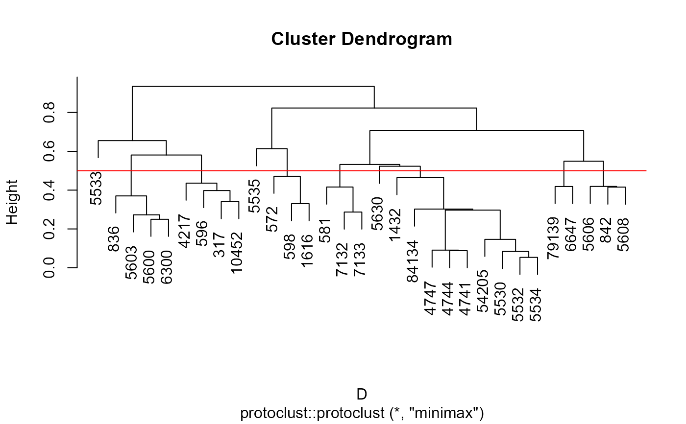
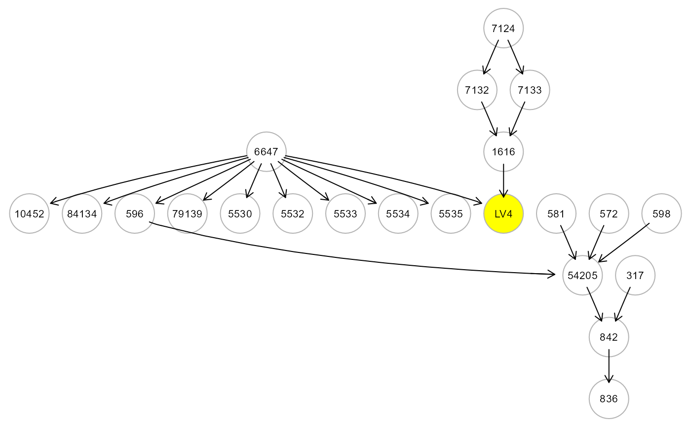
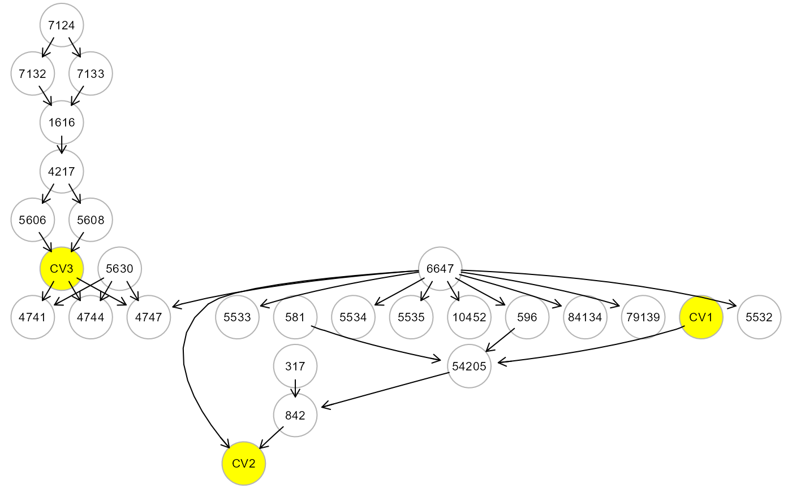
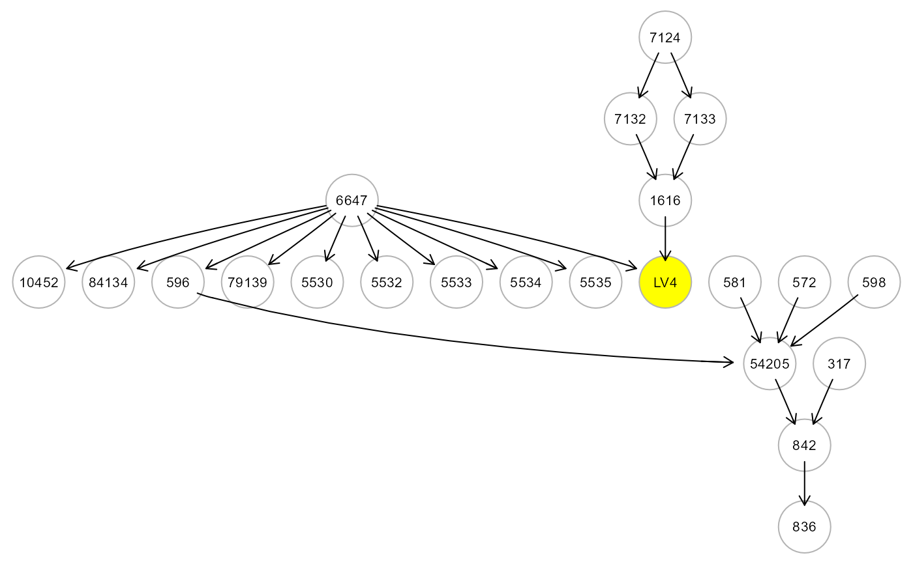
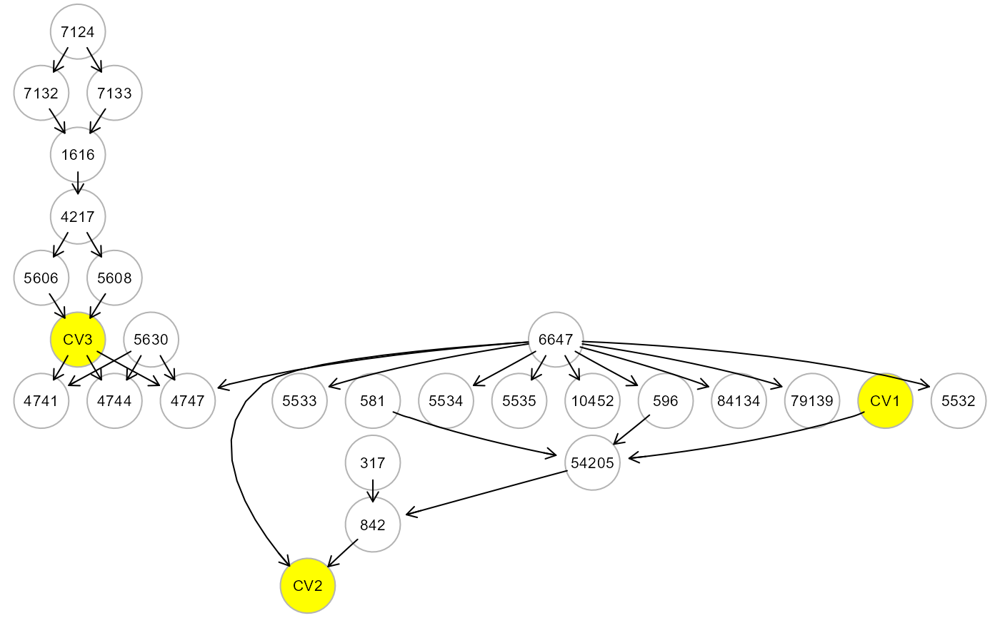

Merge groups of graph nodes using hierarchical clustering
with prototypes derived from protoclust or
custom membership attribute (e.g., cluster membership derived from
clusterGraph).
Arguments
- graph
network as an igraph object.
- data
A matrix or data.frame. Rows correspond to subjects, and columns to graph nodes. If
membershipis not NULL, is currently ignored,data = NULL.- h
Cutting the minimax clustering at height, h = 1 - abs(cor(j,k)), yielding a merged node (and a reduced data set) in which every node in the cluster has correlation of at least cor(j,k) with the prototype node. By default,
h = 0.5, i.e. cor(j,k) = 0.5.- membership
Cluster membership. A vector of cluster membership identifiers as numeric values, where vector names correspond to graph node names. By default,
membership = NULL.- HM
Hidden cluster label. If membership is derived from clusterGraph: HM = "LV", a latent variable (LV) will be defined as common unknown cause acting on cluster nodes. If HM = "CV", cluster nodes will be considered as regressors of a latent composite variable (CV). Finally, if HM = "UV", an unmeasured variable (UV) is defined, where source nodes of the module (i.e., in-degree = 0) act as common regressors influencing the other nodes via an unmeasured variable. By default,
HM = NULL- verbose
A logical value. If FALSE (default), the merged graphs will not be plotted to screen.
- ...
Currently ignored.
Value
A list of 2 objects is returned:
"gLM", A graph with merged nodes as an igraph object;
"membership", cluster membership vector for each node.
Details
Hierarchical clustering with prototypes (or Minmax linkage) is unique in naturally associating a node (the prototypes) with every interior node of the dendogram. Thus, for each merge we have a single representative data point for the resulting cluster (Bien, Tibshirani, 2011). These prototypes can be used to greatly enhance the interpretability of merging nodes and data reduction for SEM fitting.
References
Bien J, Tibshirani R (2011). Hierarchical Clustering With Prototypes via Minimax Linkage. Journal of the American Statistical Association 106(495): 1075-1084. <doi:10.1198/jasa.2011.tm10183>
Author
Mario Grassi mario.grassi@unipv.it
Examples
# Gene memberships with prototypes with h=0.5
G <- properties(alsData$graph)[[1]]
#> Frequency distribution of graph components
#>
#> n.nodes n.graphs
#> 1 32 1
#>
#> Percent of vertices in the giant component: 100 %
#>
#> is.simple is.dag is.directed is.weighted
#> TRUE TRUE TRUE TRUE
#>
#> which.mutual.FALSE
#> 47
M <- mergeNodes(G, data = alsData$exprs, h = 0.5, verbose=TRUE)

 # Gene memberships with EBC method and size=10
m <- clusterGraph(G, type = "ebc", size = 10)
#> modularity = 0.5588502
#>
#> Community sizes
#> 3 2 1 4
#> 4 8 9 11
#>
M <- mergeNodes(G, membership = m, HM = "LV", verbose=TRUE)

# Gene memberships defined by user
c1 <- c("5894", "5576", "5567", "572", "598")
c2 <- c("6788", "84152", "2915", "836", "5530")
c3 <- c("5603", "6300", "1432", "5600")
m <- c(rep(1,5), rep(2,5), rep(3,4))
names(m) <- c(c1, c2, c3)
M <- mergeNodes(G, membership = m, HM = "CV", verbose=TRUE)

# Gene memberships with EBC method and size=10
m <- clusterGraph(G, type = "ebc", size = 10)
#> modularity = 0.5588502
#>
#> Community sizes
#> 3 2 1 4
#> 4 8 9 11
#>
M <- mergeNodes(G, membership = m, HM = "LV", verbose=TRUE)

# Gene memberships defined by user
c1 <- c("5894", "5576", "5567", "572", "598")
c2 <- c("6788", "84152", "2915", "836", "5530")
c3 <- c("5603", "6300", "1432", "5600")
m <- c(rep(1,5), rep(2,5), rep(3,4))
names(m) <- c(c1, c2, c3)
M <- mergeNodes(G, membership = m, HM = "CV", verbose=TRUE)
